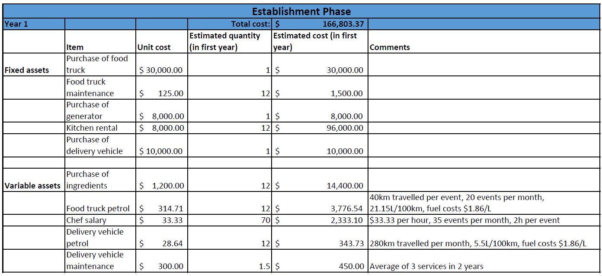
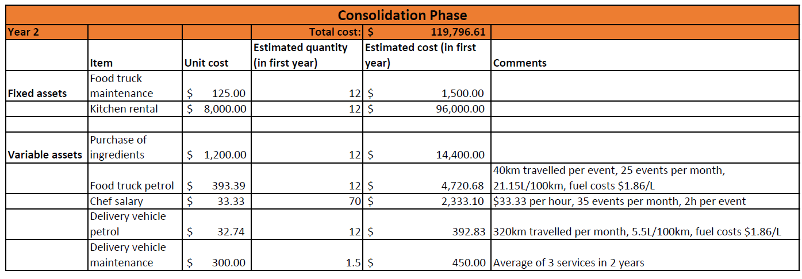
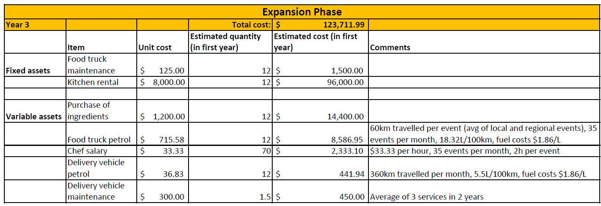
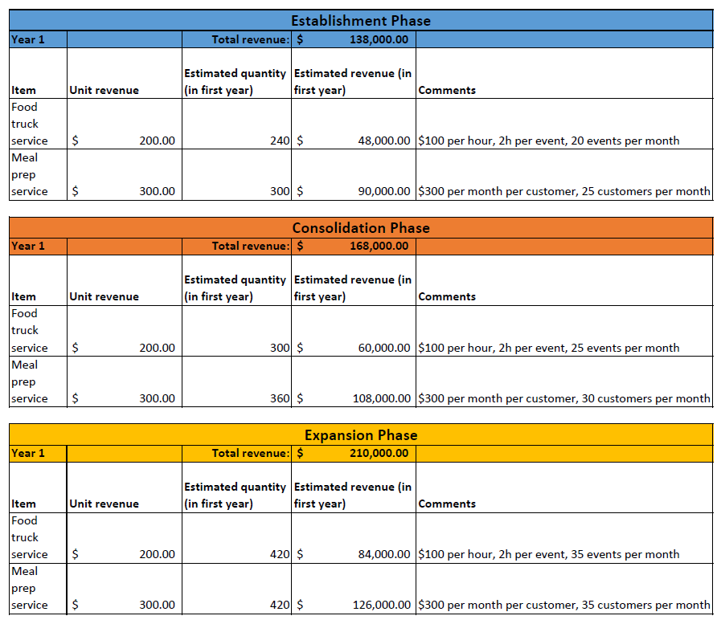

Costs
  Revenue
3-Year Income Statement

According to these financial projections, the business is expected to operate at a loss of $28,803 in its first year due to the initial costs of purchasing a food truck and a delivery vehicle for the meal prep service. In the second year, however, the business is expected to generate a profit of $48,203, due to the expected growth of its customer base and the reduction in expenditure (since there are no further capital investments). In the third year, the business is expected to generate a profit of $86,288 due to the further expansion of its customer segment as the business will, by then, operate in more regional areas. Overall, a profit of $105,688 is expected to be generated by the end of the first 3 years of the business' operation.